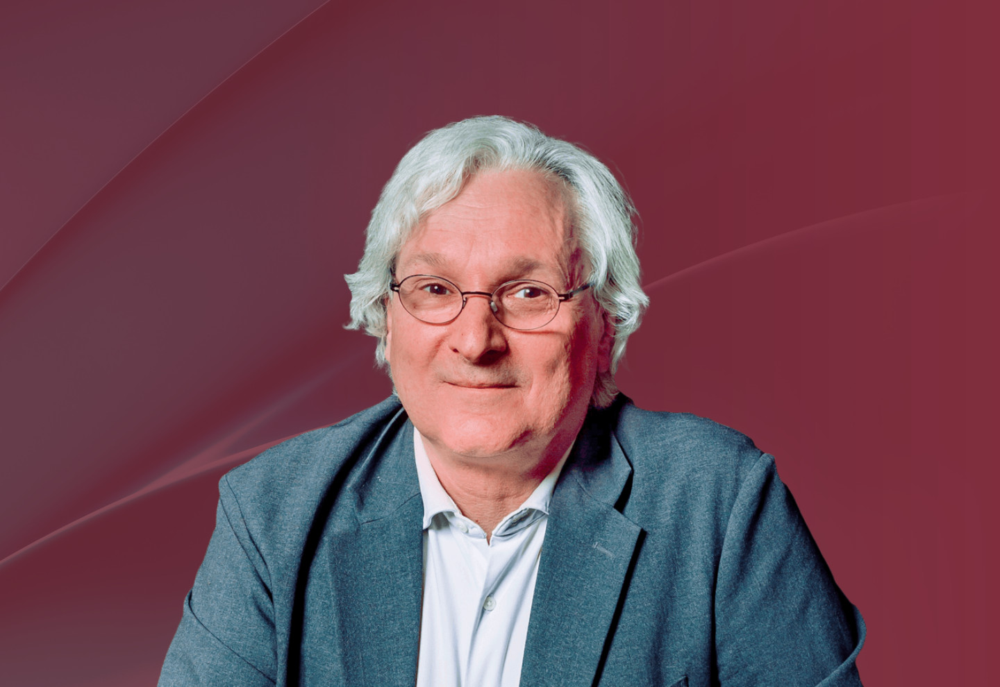

成員
艾蒂安·吉斯教授
法國
里昂高等師範學院
法國國家科學研究中心(CNRS)
榮休高級研究員
里昂高等師範學院
法國國家科學研究中心(CNRS)
榮休高級研究員

過往任期：
2026 年
艾蒂安·吉斯教授是法國科學院常任秘書長，也是法國里昂高等師範學院法國國家科學研究中心(CNRS)榮休高級研究員。
他的研究領域涵蓋動力系統、拓樸學和幾何學，並對數學史、數學教育和科學推廣有著濃厚興趣。
他曾於1990年和2014年在國際數學家大會(ICM)上發言擔任演講者，並於2014年國際數學家大會及2012年國際數學教育大會(ICME)擔任全體會議特邀演講者。他於1990年榮獲法國國家科學研究中心銀獎，於2015年獲克雷數學知識傳播獎，並於2022年獲法國國家科學研究中心科學推廣獎章。
吉斯教授是歐洲科學院院士及墨西哥科學院和巴西科學院外籍院士。
(註：所有中文譯本，皆以英文本為準)